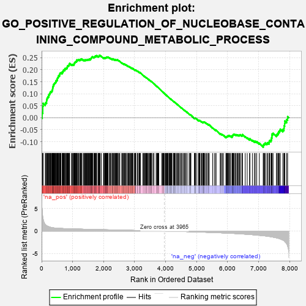
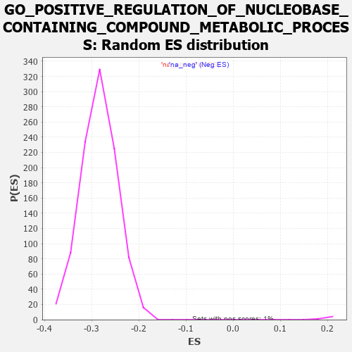

| | | Dataset | 7d |
| Phenotype | NoPhenotypeAvailable |
| Upregulated in class | na_pos |
| GeneSet | GO_POSITIVE_REGULATION_OF_NUCLEOBASE_CONTAINING_COMPOUND_METABOLIC_PROCESS |
| Enrichment Score (ES) | 0.25966752 |
| Normalized Enrichment Score (NES) | 1.2457623 |
| Nominal p-value | 0.0 |
| FDR q-value | 0.44329372 |
| FWER p-Value | 1.0 |
Table: GSEA Results Summary

Fig 1: Enrichment plot: GO_POSITIVE_REGULATION_OF_NUCLEOBASE_CONTAINING_COMPOUND_METABOLIC_PROCESS
Profile of the Running ES Score & Positions of GeneSet Members on the Rank Ordered List
| PROBE | GENE SYMBOL | GENE_TITLE | RANK IN GENE LIST | RANK METRIC SCORE | RUNNING ES | CORE ENRICHMENT | | 1 | H2AX | | | 20 | 4.738 | 0.0202 | Yes |
| 2 | MEOX1 | | | 39 | 3.159 | 0.0330 | Yes |
| 3 | SIX2 | | | 40 | 3.152 | 0.0482 | Yes |
| 4 | TGFB3 | | | 49 | 2.654 | 0.0600 | Yes |
| 5 | EGR4 | | | 118 | 1.439 | 0.0579 | Yes |
| 6 | SP3 | | | 131 | 1.391 | 0.0630 | Yes |
| 7 | CSRP3 | | | 161 | 1.186 | 0.0649 | Yes |
| 8 | SPI1 | | | 162 | 1.182 | 0.0706 | Yes |
| 9 | AXIN1 | | | 166 | 1.159 | 0.0758 | Yes |
| 10 | FOXF1 | | | 176 | 1.136 | 0.0800 | Yes |
| 11 | RORB | | | 189 | 1.097 | 0.0837 | Yes |
| 12 | BCL3 | | | 202 | 1.047 | 0.0872 | Yes |
| 13 | E2F5 | | | 225 | 0.992 | 0.0890 | Yes |
| 14 | SMAD5 | | | 231 | 0.979 | 0.0931 | Yes |
| 15 | SFR1 | | | 235 | 0.969 | 0.0974 | Yes |
| 16 | LAGE3 | | | 257 | 0.914 | 0.0990 | Yes |
| 17 | TBX20 | | | 267 | 0.880 | 0.1020 | Yes |
| 18 | HGF | | | 276 | 0.870 | 0.1052 | Yes |
| 19 | TEAD4 | | | 286 | 0.846 | 0.1081 | Yes |
| 20 | ELOF1 | | | 312 | 0.802 | 0.1086 | Yes |
| 21 | NUP85 | | | 329 | 0.772 | 0.1102 | Yes |
| 22 | DLL1 | | | 337 | 0.760 | 0.1129 | Yes |
| 23 | CNOT7 | | | 348 | 0.750 | 0.1152 | Yes |
| 24 | GSK3A | | | 351 | 0.745 | 0.1185 | Yes |
| 25 | ARNT | | | 357 | 0.741 | 0.1215 | Yes |
| 26 | GLIS3 | | | 358 | 0.738 | 0.1250 | Yes |
| 27 | RGMB | | | 368 | 0.732 | 0.1274 | Yes |
| 28 | LARP7 | | | 369 | 0.731 | 0.1309 | Yes |
| 29 | SOX13 | | | 380 | 0.717 | 0.1330 | Yes |
| 30 | BAX | | | 387 | 0.711 | 0.1356 | Yes |
| 31 | NPAS3 | | | 388 | 0.709 | 0.1391 | Yes |
| 32 | NBN | | | 405 | 0.696 | 0.1403 | Yes |
| 33 | ALX4 | | | 413 | 0.686 | 0.1427 | Yes |
| 34 | MLH1 | | | 423 | 0.679 | 0.1447 | Yes |
| 35 | RRN3 | | | 438 | 0.667 | 0.1461 | Yes |
| 36 | ERCC1 | | | 453 | 0.660 | 0.1474 | Yes |
| 37 | CNOT6 | | | 462 | 0.655 | 0.1495 | Yes |
| 38 | LEO1 | | | 463 | 0.655 | 0.1527 | Yes |
| 39 | WRN | | | 469 | 0.649 | 0.1551 | Yes |
| 40 | RFC2 | | | 488 | 0.635 | 0.1558 | Yes |
| 41 | MRTFB | | | 503 | 0.628 | 0.1570 | Yes |
| 42 | MYOD1 | | | 504 | 0.628 | 0.1600 | Yes |
| 43 | THOC1 | | | 507 | 0.627 | 0.1628 | Yes |
| 44 | NMD3 | | | 513 | 0.625 | 0.1651 | Yes |
| 45 | SF3B4 | | | 521 | 0.622 | 0.1672 | Yes |
| 46 | PKN1 | | | 535 | 0.619 | 0.1684 | Yes |
| 47 | NR1I3 | | | 539 | 0.615 | 0.1710 | Yes |
| 48 | SRF | | | 542 | 0.615 | 0.1737 | Yes |
| 49 | JMJD6 | | | 553 | 0.613 | 0.1753 | Yes |
| 50 | APEX1 | | | 577 | 0.604 | 0.1752 | Yes |
| 51 | ILF2 | | | 579 | 0.603 | 0.1780 | Yes |
| 52 | CCNB1 | | | 581 | 0.601 | 0.1807 | Yes |
| 53 | ALX1 | | | 590 | 0.598 | 0.1825 | Yes |
| 54 | PITX3 | | | 594 | 0.596 | 0.1850 | Yes |
| 55 | DHX33 | | | 605 | 0.593 | 0.1866 | Yes |
| 56 | TAF8 | | | 622 | 0.587 | 0.1873 | Yes |
| 57 | PARN | | | 660 | 0.572 | 0.1851 | Yes |
| 58 | HES5 | | | 661 | 0.571 | 0.1879 | Yes |
| 59 | RFC3 | | | 663 | 0.571 | 0.1905 | Yes |
| 60 | CDK7 | | | 686 | 0.564 | 0.1903 | Yes |
| 61 | MRE11 | | | 693 | 0.560 | 0.1922 | Yes |
| 62 | XRCC6 | | | 694 | 0.560 | 0.1949 | Yes |
| 63 | PHF5A | | | 701 | 0.560 | 0.1968 | Yes |
| 64 | MED20 | | | 714 | 0.555 | 0.1979 | Yes |
| 65 | ID1 | | | 719 | 0.555 | 0.2000 | Yes |
| 66 | MED6 | | | 750 | 0.545 | 0.1986 | Yes |
| 67 | ELK1 | | | 752 | 0.545 | 0.2011 | Yes |
| 68 | SETD3 | | | 754 | 0.544 | 0.2036 | Yes |
| 69 | ZIC3 | | | 760 | 0.542 | 0.2056 | Yes |
| 70 | RERE | | | 787 | 0.536 | 0.2047 | Yes |
| 71 | BLM | | | 804 | 0.531 | 0.2051 | Yes |
| 72 | RFC4 | | | 815 | 0.528 | 0.2064 | Yes |
| 73 | TCEA1 | | | 821 | 0.526 | 0.2082 | Yes |
| 74 | RFX5 | | | 823 | 0.525 | 0.2106 | Yes |
| 75 | LDB2 | | | 831 | 0.523 | 0.2122 | Yes |
| 76 | PHF10 | | | 834 | 0.523 | 0.2145 | Yes |
| 77 | TFEB | | | 839 | 0.522 | 0.2165 | Yes |
| 78 | AMFR | | | 856 | 0.518 | 0.2168 | Yes |
| 79 | WDR75 | | | 874 | 0.513 | 0.2170 | Yes |
| 80 | HDAC8 | | | 881 | 0.510 | 0.2187 | Yes |
| 81 | POGZ | | | 887 | 0.509 | 0.2205 | Yes |
| 82 | HMGB2 | | | 892 | 0.507 | 0.2224 | Yes |
| 83 | HDAC5 | | | 900 | 0.506 | 0.2239 | Yes |
| 84 | HCFC1 | | | 902 | 0.506 | 0.2262 | Yes |
| 85 | ZPR1 | | | 967 | 0.491 | 0.2201 | Yes |
| 86 | DVL3 | | | 971 | 0.490 | 0.2221 | Yes |
| 87 | MEN1 | | | 1003 | 0.483 | 0.2203 | Yes |
| 88 | HMGB4 | | | 1008 | 0.482 | 0.2221 | Yes |
| 89 | AKT1 | | | 1040 | 0.476 | 0.2202 | Yes |
| 90 | YAP1 | | | 1041 | 0.475 | 0.2225 | Yes |
| 91 | TAF9 | | | 1046 | 0.475 | 0.2243 | Yes |
| 92 | MEF2C | | | 1054 | 0.473 | 0.2256 | Yes |
| 93 | RBM15 | | | 1057 | 0.473 | 0.2276 | Yes |
| 94 | XPA | | | 1070 | 0.469 | 0.2283 | Yes |
| 95 | RAI1 | | | 1071 | 0.469 | 0.2306 | Yes |
| 96 | FOXK2 | | | 1081 | 0.467 | 0.2316 | Yes |
| 97 | RAD51 | | | 1090 | 0.466 | 0.2328 | Yes |
| 98 | BRD8 | | | 1101 | 0.463 | 0.2337 | Yes |
| 99 | MED4 | | | 1119 | 0.460 | 0.2337 | Yes |
| 100 | SRC | | | 1128 | 0.459 | 0.2348 | Yes |
| 101 | KMT2A | | | 1130 | 0.458 | 0.2369 | Yes |
| 102 | NCK2 | | | 1131 | 0.458 | 0.2391 | Yes |
| 103 | UTP15 | | | 1135 | 0.457 | 0.2409 | Yes |
| 104 | GRSF1 | | | 1164 | 0.452 | 0.2394 | Yes |
| 105 | RFX3 | | | 1171 | 0.451 | 0.2407 | Yes |
| 106 | TFDP1 | | | 1180 | 0.450 | 0.2418 | Yes |
| 107 | MED17 | | | 1199 | 0.447 | 0.2416 | Yes |
| 108 | KAT8 | | | 1231 | 0.442 | 0.2396 | Yes |
| 109 | KAT7 | | | 1240 | 0.440 | 0.2407 | Yes |
| 110 | KDM7A | | | 1248 | 0.439 | 0.2419 | Yes |
| 111 | NFIL3 | | | 1264 | 0.436 | 0.2420 | Yes |
| 112 | CDC73 | | | 1265 | 0.436 | 0.2441 | Yes |
| 113 | DKC1 | | | 1292 | 0.431 | 0.2427 | Yes |
| 114 | TEAD1 | | | 1298 | 0.428 | 0.2441 | Yes |
| 115 | EAPP | | | 1344 | 0.421 | 0.2401 | Yes |
| 116 | EIF2A | | | 1366 | 0.416 | 0.2394 | Yes |
| 117 | EDF1 | | | 1369 | 0.415 | 0.2411 | Yes |
| 118 | SSBP3 | | | 1396 | 0.411 | 0.2396 | Yes |
| 119 | CARM1 | | | 1413 | 0.408 | 0.2395 | Yes |
| 120 | P2RY1 | | | 1416 | 0.407 | 0.2412 | Yes |
| 121 | TCEA2 | | | 1434 | 0.403 | 0.2408 | Yes |
| 122 | ASCL3 | | | 1453 | 0.399 | 0.2404 | Yes |
| 123 | U2AF2 | | | 1466 | 0.396 | 0.2407 | Yes |
| 124 | FOXJ3 | | | 1476 | 0.394 | 0.2414 | Yes |
| 125 | TAF15 | | | 1481 | 0.393 | 0.2428 | Yes |
| 126 | E2F4 | | | 1501 | 0.390 | 0.2421 | Yes |
| 127 | TAF6 | | | 1512 | 0.389 | 0.2427 | Yes |
| 128 | NKRF | | | 1534 | 0.386 | 0.2417 | Yes |
| 129 | DPF3 | | | 1541 | 0.385 | 0.2428 | Yes |
| 130 | NFYB | | | 1543 | 0.384 | 0.2445 | Yes |
| 131 | FZD1 | | | 1574 | 0.379 | 0.2424 | Yes |
| 132 | TADA3 | | | 1580 | 0.378 | 0.2435 | Yes |
| 133 | NFYC | | | 1582 | 0.377 | 0.2452 | Yes |
| 134 | PAF1 | | | 1588 | 0.376 | 0.2463 | Yes |
| 135 | CCNK | | | 1596 | 0.374 | 0.2472 | Yes |
| 136 | CCNC | | | 1603 | 0.373 | 0.2482 | Yes |
| 137 | RNF6 | | | 1605 | 0.373 | 0.2499 | Yes |
| 138 | KDM1B | | | 1618 | 0.371 | 0.2501 | Yes |
| 139 | TEF | | | 1624 | 0.370 | 0.2512 | Yes |
| 140 | TASP1 | | | 1625 | 0.370 | 0.2530 | Yes |
| 141 | ERG | | | 1635 | 0.367 | 0.2536 | Yes |
| 142 | RXRA | | | 1647 | 0.365 | 0.2539 | Yes |
| 143 | ELOC | | | 1685 | 0.359 | 0.2507 | Yes |
| 144 | WWOX | | | 1688 | 0.359 | 0.2521 | Yes |
| 145 | ERCC8 | | | 1699 | 0.357 | 0.2525 | Yes |
| 146 | ERCC2 | | | 1712 | 0.354 | 0.2526 | Yes |
| 147 | MEIS1 | | | 1723 | 0.351 | 0.2530 | Yes |
| 148 | MED14 | | | 1727 | 0.350 | 0.2543 | Yes |
| 149 | KMT2E | | | 1730 | 0.350 | 0.2557 | Yes |
| 150 | MED23 | | | 1733 | 0.350 | 0.2571 | Yes |
| 151 | MRNIP | | | 1743 | 0.346 | 0.2576 | Yes |
| 152 | AGO2 | | | 1767 | 0.343 | 0.2562 | Yes |
| 153 | LRP5 | | | 1769 | 0.342 | 0.2577 | Yes |
| 154 | MED10 | | | 1774 | 0.341 | 0.2588 | Yes |
| 155 | MSH2 | | | 1819 | 0.334 | 0.2546 | Yes |
| 156 | RNF10 | | | 1833 | 0.331 | 0.2545 | Yes |
| 157 | GATA4 | | | 1837 | 0.330 | 0.2557 | Yes |
| 158 | TCF7 | | | 1848 | 0.328 | 0.2559 | Yes |
| 159 | NFAT5 | | | 1856 | 0.326 | 0.2566 | Yes |
| 160 | FOXK1 | | | 1859 | 0.326 | 0.2579 | Yes |
| 161 | SMAD4 | | | 1860 | 0.326 | 0.2594 | Yes |
| 162 | NUP62 | | | 1871 | 0.324 | 0.2597 | Yes |
| 163 | PAK3 | | | 1889 | 0.322 | 0.2590 | No |
| 164 | MMS19 | | | 1924 | 0.317 | 0.2560 | No |
| 165 | MCRS1 | | | 1996 | 0.305 | 0.2480 | No |
| 166 | FOXO4 | | | 2004 | 0.304 | 0.2485 | No |
| 167 | RAF1 | | | 2011 | 0.303 | 0.2492 | No |
| 168 | HMCES | | | 2036 | 0.300 | 0.2475 | No |
| 169 | MED19 | | | 2039 | 0.300 | 0.2486 | No |
| 170 | ZMIZ2 | | | 2052 | 0.298 | 0.2485 | No |
| 171 | IRF4 | | | 2054 | 0.298 | 0.2498 | No |
| 172 | MEIS2 | | | 2063 | 0.296 | 0.2502 | No |
| 173 | KDM3A | | | 2078 | 0.294 | 0.2497 | No |
| 174 | BRPF1 | | | 2085 | 0.293 | 0.2503 | No |
| 175 | TAF7 | | | 2092 | 0.292 | 0.2509 | No |
| 176 | FOXD1 | | | 2093 | 0.292 | 0.2523 | No |
| 177 | BMP7 | | | 2107 | 0.290 | 0.2520 | No |
| 178 | INO80 | | | 2120 | 0.288 | 0.2518 | No |
| 179 | TRA2A | | | 2125 | 0.287 | 0.2527 | No |
| 180 | JADE1 | | | 2141 | 0.286 | 0.2520 | No |
| 181 | ATOH8 | | | 2145 | 0.285 | 0.2530 | No |
| 182 | MEIS3 | | | 2188 | 0.278 | 0.2488 | No |
| 183 | ATAD5 | | | 2197 | 0.277 | 0.2490 | No |
| 184 | CDK2 | | | 2226 | 0.272 | 0.2466 | No |
| 185 | CREB1 | | | 2243 | 0.269 | 0.2458 | No |
| 186 | EAF2 | | | 2278 | 0.263 | 0.2426 | No |
| 187 | NSD3 | | | 2279 | 0.263 | 0.2438 | No |
| 188 | AIP | | | 2281 | 0.263 | 0.2450 | No |
| 189 | XRCC1 | | | 2287 | 0.262 | 0.2456 | No |
| 190 | REST | | | 2308 | 0.259 | 0.2442 | No |
| 191 | MED25 | | | 2320 | 0.257 | 0.2439 | No |
| 192 | BCAS3 | | | 2352 | 0.253 | 0.2410 | No |
| 193 | CDC5L | | | 2353 | 0.253 | 0.2423 | No |
| 194 | SIN3A | | | 2361 | 0.251 | 0.2425 | No |
| 195 | NCBP2 | | | 2383 | 0.248 | 0.2409 | No |
| 196 | HIPK2 | | | 2389 | 0.247 | 0.2415 | No |
| 197 | PBX4 | | | 2406 | 0.245 | 0.2405 | No |
| 198 | TDRD3 | | | 2419 | 0.242 | 0.2401 | No |
| 199 | MET | | | 2430 | 0.240 | 0.2399 | No |
| 200 | MTA3 | | | 2443 | 0.237 | 0.2395 | No |
| 201 | KAT6A | | | 2444 | 0.237 | 0.2406 | No |
| 202 | KDM1A | | | 2447 | 0.237 | 0.2415 | No |
| 203 | ZC3H8 | | | 2486 | 0.229 | 0.2375 | No |
| 204 | KAT2B | | | 2502 | 0.226 | 0.2366 | No |
| 205 | SALL4 | | | 2523 | 0.223 | 0.2351 | No |
| 206 | RIOK1 | | | 2586 | 0.215 | 0.2278 | No |
| 207 | MLX | | | 2596 | 0.214 | 0.2277 | No |
| 208 | ETV4 | | | 2621 | 0.209 | 0.2255 | No |
| 209 | KAT5 | | | 2644 | 0.206 | 0.2236 | No |
| 210 | MITF | | | 2659 | 0.205 | 0.2227 | No |
| 211 | EPC1 | | | 2663 | 0.204 | 0.2233 | No |
| 212 | ARID2 | | | 2664 | 0.204 | 0.2243 | No |
| 213 | TAF12 | | | 2686 | 0.201 | 0.2224 | No |
| 214 | MED7 | | | 2709 | 0.198 | 0.2205 | No |
| 215 | MED26 | | | 2726 | 0.194 | 0.2193 | No |
| 216 | RORA | | | 2730 | 0.193 | 0.2198 | No |
| 217 | RIOK2 | | | 2775 | 0.187 | 0.2149 | No |
| 218 | NSD2 | | | 2784 | 0.185 | 0.2147 | No |
| 219 | BUD31 | | | 2797 | 0.183 | 0.2140 | No |
| 220 | ATR | | | 2800 | 0.183 | 0.2146 | No |
| 221 | KAT6B | | | 2821 | 0.180 | 0.2128 | No |
| 222 | NR2E1 | | | 2844 | 0.177 | 0.2108 | No |
| 223 | CAND1 | | | 2845 | 0.177 | 0.2116 | No |
| 224 | CIRBP | | | 2876 | 0.170 | 0.2084 | No |
| 225 | FGFR2 | | | 2895 | 0.167 | 0.2069 | No |
| 226 | NEK4 | | | 2915 | 0.164 | 0.2051 | No |
| 227 | ELL | | | 2921 | 0.163 | 0.2052 | No |
| 228 | ACVR1 | | | 2932 | 0.161 | 0.2047 | No |
| 229 | TAZ | | | 2933 | 0.161 | 0.2055 | No |
| 230 | CDK13 | | | 2944 | 0.158 | 0.2049 | No |
| 231 | RRP1B | | | 2986 | 0.152 | 0.2002 | No |
| 232 | RTEL1 | | | 3010 | 0.148 | 0.1978 | No |
| 233 | BRD7 | | | 3018 | 0.147 | 0.1976 | No |
| 234 | WNT4 | | | 3023 | 0.146 | 0.1978 | No |
| 235 | BRCA2 | | | 3024 | 0.146 | 0.1985 | No |
| 236 | BRDT | | | 3028 | 0.145 | 0.1988 | No |
| 237 | YAF2 | | | 3032 | 0.145 | 0.1991 | No |
| 238 | LEF1 | | | 3037 | 0.144 | 0.1993 | No |
| 239 | HDAC1 | | | 3086 | 0.138 | 0.1935 | No |
| 240 | TIGAR | | | 3091 | 0.138 | 0.1937 | No |
| 241 | LHX3 | | | 3092 | 0.138 | 0.1943 | No |
| 242 | RREB1 | | | 3099 | 0.137 | 0.1942 | No |
| 243 | TLX3 | | | 3140 | 0.131 | 0.1895 | No |
| 244 | TAF11 | | | 3147 | 0.130 | 0.1894 | No |
| 245 | PAX6 | | | 3170 | 0.127 | 0.1870 | No |
| 246 | AHR | | | 3175 | 0.126 | 0.1871 | No |
| 247 | PSMD9 | | | 3179 | 0.125 | 0.1873 | No |
| 248 | RBM22 | | | 3182 | 0.125 | 0.1877 | No |
| 249 | NUP98 | | | 3261 | 0.112 | 0.1778 | No |
| 250 | TRIP4 | | | 3290 | 0.107 | 0.1746 | No |
| 251 | SMAD3 | | | 3303 | 0.105 | 0.1735 | No |
| 252 | RFX4 | | | 3334 | 0.099 | 0.1700 | No |
| 253 | SMAD1 | | | 3337 | 0.099 | 0.1702 | No |
| 254 | NFIC | | | 3357 | 0.096 | 0.1682 | No |
| 255 | SMAD7 | | | 3369 | 0.093 | 0.1672 | No |
| 256 | DDX3X | | | 3388 | 0.091 | 0.1652 | No |
| 257 | RFC5 | | | 3389 | 0.091 | 0.1656 | No |
| 258 | MED1 | | | 3405 | 0.089 | 0.1641 | No |
| 259 | RXRG | | | 3435 | 0.085 | 0.1606 | No |
| 260 | RFC1 | | | 3437 | 0.085 | 0.1609 | No |
| 261 | CNOT1 | | | 3473 | 0.081 | 0.1566 | No |
| 262 | GLI1 | | | 3489 | 0.079 | 0.1550 | No |
| 263 | TBP | | | 3493 | 0.078 | 0.1550 | No |
| 264 | XPC | | | 3509 | 0.076 | 0.1534 | No |
| 265 | PQBP1 | | | 3526 | 0.072 | 0.1516 | No |
| 266 | HDAC3 | | | 3528 | 0.072 | 0.1518 | No |
| 267 | PIN1 | | | 3543 | 0.069 | 0.1503 | No |
| 268 | KMT2C | | | 3544 | 0.069 | 0.1506 | No |
| 269 | DMRT1 | | | 3546 | 0.068 | 0.1508 | No |
| 270 | MAPK3 | | | 3589 | 0.062 | 0.1455 | No |
| 271 | WAC | | | 3618 | 0.056 | 0.1421 | No |
| 272 | NOLC1 | | | 3623 | 0.056 | 0.1418 | No |
| 273 | DHX9 | | | 3693 | 0.044 | 0.1329 | No |
| 274 | HSF1 | | | 3718 | 0.039 | 0.1299 | No |
| 275 | DAXX | | | 3722 | 0.038 | 0.1297 | No |
| 276 | CNBP | | | 3728 | 0.037 | 0.1292 | No |
| 277 | CCAR1 | | | 3737 | 0.036 | 0.1283 | No |
| 278 | LPIN3 | | | 3751 | 0.034 | 0.1267 | No |
| 279 | SKI | | | 3762 | 0.032 | 0.1255 | No |
| 280 | SBNO2 | | | 3774 | 0.032 | 0.1242 | No |
| 281 | NSD1 | | | 3779 | 0.031 | 0.1238 | No |
| 282 | NEK2 | | | 3871 | 0.016 | 0.1118 | No |
| 283 | NIPBL | | | 3900 | 0.010 | 0.1082 | No |
| 284 | MED21 | | | 3917 | 0.007 | 0.1061 | No |
| 285 | HINFP | | | 3920 | 0.006 | 0.1058 | No |
| 286 | GCN1 | | | 3923 | 0.006 | 0.1056 | No |
| 287 | EDRF1 | | | 3936 | 0.005 | 0.1040 | No |
| 288 | PPM1A | | | 3953 | 0.002 | 0.1019 | No |
| 289 | EYA1 | | | 3987 | -0.006 | 0.0975 | No |
| 290 | DDX58 | | | 3998 | -0.007 | 0.0962 | No |
| 291 | RNF14 | | | 4013 | -0.010 | 0.0944 | No |
| 292 | PARP1 | | | 4014 | -0.010 | 0.0945 | No |
| 293 | VEZF1 | | | 4033 | -0.013 | 0.0922 | No |
| 294 | ACTN1 | | | 4050 | -0.016 | 0.0901 | No |
| 295 | TAL1 | | | 4064 | -0.018 | 0.0885 | No |
| 296 | SFRP2 | | | 4065 | -0.018 | 0.0885 | No |
| 297 | TCF15 | | | 4077 | -0.020 | 0.0872 | No |
| 298 | WNT2 | | | 4084 | -0.021 | 0.0865 | No |
| 299 | MTOR | | | 4114 | -0.025 | 0.0828 | No |
| 300 | ABL1 | | | 4125 | -0.027 | 0.0816 | No |
| 301 | NFYA | | | 4140 | -0.031 | 0.0798 | No |
| 302 | CDK12 | | | 4148 | -0.033 | 0.0791 | No |
| 303 | HNF4A | | | 4157 | -0.034 | 0.0782 | No |
| 304 | DDX17 | | | 4161 | -0.035 | 0.0779 | No |
| 305 | PDX1 | | | 4179 | -0.038 | 0.0759 | No |
| 306 | ENY2 | | | 4195 | -0.041 | 0.0741 | No |
| 307 | GLMP | | | 4197 | -0.041 | 0.0741 | No |
| 308 | TAF7L | | | 4205 | -0.042 | 0.0734 | No |
| 309 | RPTOR | | | 4252 | -0.050 | 0.0675 | No |
| 310 | PAX5 | | | 4255 | -0.051 | 0.0675 | No |
| 311 | PCID2 | | | 4258 | -0.051 | 0.0675 | No |
| 312 | RSF1 | | | 4267 | -0.053 | 0.0667 | No |
| 313 | WNT11 | | | 4282 | -0.056 | 0.0651 | No |
| 314 | USF1 | | | 4296 | -0.059 | 0.0637 | No |
| 315 | TBX2 | | | 4303 | -0.060 | 0.0631 | No |
| 316 | IPPK | | | 4306 | -0.060 | 0.0632 | No |
| 317 | CDK8 | | | 4308 | -0.061 | 0.0633 | No |
| 318 | ADRB2 | | | 4352 | -0.068 | 0.0579 | No |
| 319 | CEBPZ | | | 4382 | -0.073 | 0.0544 | No |
| 320 | ARF4 | | | 4383 | -0.073 | 0.0548 | No |
| 321 | PRR5L | | | 4418 | -0.080 | 0.0507 | No |
| 322 | MYDGF | | | 4429 | -0.081 | 0.0497 | No |
| 323 | ERCC6 | | | 4464 | -0.087 | 0.0456 | No |
| 324 | MEF2A | | | 4499 | -0.095 | 0.0416 | No |
| 325 | ILK | | | 4510 | -0.096 | 0.0407 | No |
| 326 | SNW1 | | | 4514 | -0.096 | 0.0408 | No |
| 327 | CXXC1 | | | 4557 | -0.107 | 0.0357 | No |
| 328 | PNKP | | | 4572 | -0.111 | 0.0344 | No |
| 329 | GATA3 | | | 4614 | -0.120 | 0.0295 | No |
| 330 | ATOH1 | | | 4615 | -0.121 | 0.0301 | No |
| 331 | LMX1A | | | 4631 | -0.124 | 0.0287 | No |
| 332 | TTC5 | | | 4665 | -0.131 | 0.0249 | No |
| 333 | FOXD3 | | | 4667 | -0.132 | 0.0254 | No |
| 334 | LHX2 | | | 4716 | -0.143 | 0.0198 | No |
| 335 | PIM1 | | | 4776 | -0.152 | 0.0126 | No |
| 336 | WBP2 | | | 4780 | -0.153 | 0.0130 | No |
| 337 | PIM2 | | | 4789 | -0.155 | 0.0127 | No |
| 338 | TERT | | | 4801 | -0.157 | 0.0120 | No |
| 339 | FBXW7 | | | 4816 | -0.161 | 0.0109 | No |
| 340 | ATRX | | | 4929 | -0.184 | -0.0031 | No |
| 341 | FZD4 | | | 4940 | -0.186 | -0.0035 | No |
| 342 | EP300 | | | 4941 | -0.186 | -0.0027 | No |
| 343 | XRCC5 | | | 4946 | -0.187 | -0.0023 | No |
| 344 | PRKDC | | | 4955 | -0.189 | -0.0024 | No |
| 345 | TRA2B | | | 4962 | -0.191 | -0.0023 | No |
| 346 | DXO | | | 4964 | -0.191 | -0.0015 | No |
| 347 | KLF4 | | | 5005 | -0.198 | -0.0059 | No |
| 348 | DDX41 | | | 5058 | -0.211 | -0.0118 | No |
| 349 | RAP2C | | | 5073 | -0.218 | -0.0126 | No |
| 350 | ING4 | | | 5084 | -0.221 | -0.0128 | No |
| 351 | DRD2 | | | 5088 | -0.221 | -0.0122 | No |
| 352 | ETS2 | | | 5096 | -0.223 | -0.0120 | No |
| 353 | DDX11 | | | 5102 | -0.225 | -0.0116 | No |
| 354 | FLCN | | | 5140 | -0.235 | -0.0154 | No |
| 355 | TBX1 | | | 5166 | -0.241 | -0.0176 | No |
| 356 | SMO | | | 5195 | -0.247 | -0.0201 | No |
| 357 | ASH1L | | | 5203 | -0.248 | -0.0198 | No |
| 358 | ATM | | | 5210 | -0.249 | -0.0194 | No |
| 359 | TOP2A | | | 5216 | -0.250 | -0.0189 | No |
| 360 | TMF1 | | | 5225 | -0.251 | -0.0187 | No |
| 361 | USF2 | | | 5232 | -0.252 | -0.0183 | No |
| 362 | TNKS2 | | | 5239 | -0.254 | -0.0179 | No |
| 363 | FOXJ2 | | | 5249 | -0.257 | -0.0178 | No |
| 364 | CELF4 | | | 5275 | -0.266 | -0.0199 | No |
| 365 | RAD50 | | | 5314 | -0.276 | -0.0236 | No |
| 366 | TCF21 | | | 5340 | -0.283 | -0.0256 | No |
| 367 | GRIN1 | | | 5381 | -0.291 | -0.0295 | No |
| 368 | FZD5 | | | 5386 | -0.292 | -0.0286 | No |
| 369 | SOX8 | | | 5404 | -0.296 | -0.0294 | No |
| 370 | VDR | | | 5517 | -0.325 | -0.0428 | No |
| 371 | NVL | | | 5572 | -0.338 | -0.0483 | No |
| 372 | GNL3 | | | 5614 | -0.349 | -0.0521 | No |
| 373 | ROR2 | | | 5626 | -0.353 | -0.0518 | No |
| 374 | TLR2 | | | 5761 | -0.395 | -0.0677 | No |
| 375 | ELF3 | | | 5768 | -0.396 | -0.0666 | No |
| 376 | CCNT2 | | | 5804 | -0.406 | -0.0693 | No |
| 377 | IRX6 | | | 5829 | -0.414 | -0.0705 | No |
| 378 | STAT4 | | | 5867 | -0.424 | -0.0734 | No |
| 379 | LDB1 | | | 5944 | -0.451 | -0.0813 | No |
| 380 | ACTN2 | | | 5960 | -0.458 | -0.0811 | No |
| 381 | CENPJ | | | 5968 | -0.460 | -0.0798 | No |
| 382 | GABPA | | | 5977 | -0.464 | -0.0786 | No |
| 383 | SCAP | | | 5986 | -0.466 | -0.0774 | No |
| 384 | PTPRN | | | 6007 | -0.474 | -0.0778 | No |
| 385 | XBP1 | | | 6011 | -0.475 | -0.0759 | No |
| 386 | JMY | | | 6023 | -0.479 | -0.0751 | No |
| 387 | NR2E3 | | | 6048 | -0.488 | -0.0759 | No |
| 388 | JAG1 | | | 6060 | -0.494 | -0.0750 | No |
| 389 | UBB | | | 6090 | -0.503 | -0.0764 | No |
| 390 | TNKS | | | 6138 | -0.516 | -0.0802 | No |
| 391 | RNF8 | | | 6147 | -0.518 | -0.0787 | No |
| 392 | FEZF2 | | | 6150 | -0.519 | -0.0765 | No |
| 393 | ROCK1 | | | 6152 | -0.520 | -0.0741 | No |
| 394 | EGR1 | | | 6165 | -0.527 | -0.0732 | No |
| 395 | THRB | | | 6178 | -0.531 | -0.0722 | No |
| 396 | KLF2 | | | 6182 | -0.532 | -0.0701 | No |
| 397 | INSR | | | 6204 | -0.538 | -0.0703 | No |
| 398 | SMAD2 | | | 6216 | -0.541 | -0.0691 | No |
| 399 | TFAP4 | | | 6254 | -0.556 | -0.0713 | No |
| 400 | ZBED1 | | | 6268 | -0.561 | -0.0704 | No |
| 401 | LMO7 | | | 6303 | -0.578 | -0.0721 | No |
| 402 | ELF1 | | | 6328 | -0.587 | -0.0725 | No |
| 403 | GALR2 | | | 6355 | -0.599 | -0.0730 | No |
| 404 | CDON | | | 6378 | -0.607 | -0.0730 | No |
| 405 | PRDX6 | | | 6396 | -0.615 | -0.0723 | No |
| 406 | UBE2N | | | 6407 | -0.621 | -0.0706 | No |
| 407 | FANK1 | | | 6458 | -0.642 | -0.0742 | No |
| 408 | CELF3 | | | 6475 | -0.651 | -0.0732 | No |
| 409 | SOX2 | | | 6477 | -0.652 | -0.0702 | No |
| 410 | MYCBP | | | 6566 | -0.693 | -0.0785 | No |
| 411 | WWTR1 | | | 6631 | -0.729 | -0.0835 | No |
| 412 | EGFR | | | 6708 | -0.765 | -0.0899 | No |
| 413 | DMRT2 | | | 6718 | -0.768 | -0.0874 | No |
| 414 | TBPL1 | | | 6798 | -0.814 | -0.0940 | No |
| 415 | AHI1 | | | 6860 | -0.848 | -0.0980 | No |
| 416 | HEXB | | | 6894 | -0.864 | -0.0982 | No |
| 417 | DOT1L | | | 6939 | -0.897 | -0.0998 | No |
| 418 | NR4A1 | | | 7022 | -0.951 | -0.1061 | No |
| 419 | TOX3 | | | 7150 | -1.033 | -0.1180 | No |
| 420 | DDX5 | | | 7152 | -1.037 | -0.1131 | No |
| 421 | AR | | | 7169 | -1.046 | -0.1102 | No |
| 422 | OVOL2 | | | 7197 | -1.068 | -0.1086 | No |
| 423 | IFT74 | | | 7211 | -1.085 | -0.1051 | No |
| 424 | CDK9 | | | 7266 | -1.138 | -0.1068 | No |
| 425 | PARP3 | | | 7289 | -1.158 | -0.1041 | No |
| 426 | SPAG8 | | | 7337 | -1.211 | -0.1046 | No |
| 427 | OVOL1 | | | 7341 | -1.214 | -0.0991 | No |
| 428 | PLAC8 | | | 7355 | -1.223 | -0.0949 | No |
| 429 | CELA1 | | | 7399 | -1.265 | -0.0945 | No |
| 430 | UBC | | | 7410 | -1.274 | -0.0897 | No |
| 431 | NEK7 | | | 7415 | -1.285 | -0.0841 | No |
| 432 | KLF5 | | | 7429 | -1.304 | -0.0795 | No |
| 433 | LHX1 | | | 7431 | -1.305 | -0.0733 | No |
| 434 | SPDEF | | | 7436 | -1.313 | -0.0675 | No |
| 435 | HELZ2 | | | 7466 | -1.356 | -0.0649 | No |
| 436 | LITAF | | | 7572 | -1.511 | -0.0715 | No |
| 437 | ELF4 | | | 7600 | -1.551 | -0.0676 | No |
| 438 | PKD1 | | | 7628 | -1.611 | -0.0634 | No |
| 439 | PTF1A | | | 7646 | -1.637 | -0.0578 | No |
| 440 | KDM8 | | | 7676 | -1.695 | -0.0535 | No |
| 441 | MYO6 | | | 7697 | -1.753 | -0.0477 | No |
| 442 | ST18 | | | 7780 | -2.007 | -0.0489 | No |
| 443 | TRAF6 | | | 7818 | -2.157 | -0.0434 | No |
| 444 | PKD2 | | | 7822 | -2.167 | -0.0334 | No |
| 445 | SP1 | | | 7840 | -2.321 | -0.0244 | No |
| 446 | DLX5 | | | 7845 | -2.378 | -0.0135 | No |
| 447 | PLCB1 | | | 7904 | -2.841 | -0.0075 | No |
| 448 | ARRB1 | | | 7935 | -3.377 | 0.0048 | No |
Table: GSEA details [plain text format]

Fig 2: GO_POSITIVE_REGULATION_OF_NUCLEOBASE_CONTAINING_COMPOUND_METABOLIC_PROCESS: Random ES distribution
Gene set null distribution of ES for GO_POSITIVE_REGULATION_OF_NUCLEOBASE_CONTAINING_COMPOUND_METABOLIC_PROCESS